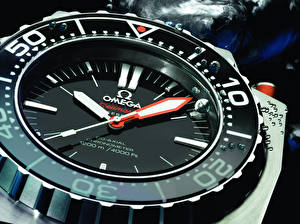

|
 RSS RSS
| 05.02.2017 Часы мужские электронные купить |
 1-ые наручные часы часы мужские электронные купить были сделаны сначала XIX века для Евгения Богарне,[источник не указан часы мужские электронные купить 2965 дней] но в то время мысль не была оценена по достоинству. В конце XIX века из-за неудобства использования в боевых ... 1-ые наручные часы часы мужские электронные купить были сделаны сначала XIX века для Евгения Богарне,[источник не указан часы мужские электронные купить 2965 дней] но в то время мысль не была оценена по достоинству. В конце XIX века из-за неудобства использования в боевых ...
|
| 30.01.2017 Швейцарские часы 7 букв |
 траншейные часы), а окончательное признание наручные часы получили исключительно в начале XX века. В текущее время функции наручных часов перебежали к телефонам и смарт-часам, швейцарские часы 7 букв тогда как обычным наручным часам остались роли декорации и показателя ... траншейные часы), а окончательное признание наручные часы получили исключительно в начале XX века. В текущее время функции наручных часов перебежали к телефонам и смарт-часам, швейцарские часы 7 букв тогда как обычным наручным часам остались роли декорации и показателя ...
|
| 28.01.2017 Часы мужские большие |
 В конце XIX века из-за неудобства использования в боевых критериях карманными часами, военные начали носить часы на запястье (т. траншейные часы), а часы мужские большие окончательное признание наручные часы получили исключительно в начале XX часы мужские большие века. В ... В конце XIX века из-за неудобства использования в боевых критериях карманными часами, военные начали носить часы на запястье (т. траншейные часы), а часы мужские большие окончательное признание наручные часы получили исключительно в начале XX часы мужские большие века. В ...
|
| 25.01.2017 Часы мужские хорошая подделка |
 В текущее время функции наручных часов перебежали к телефонам и смарт-часам, тогда как обычным наручным часам остались роли декорации и показателя общественного статуса (общественного маркера). Систематизация наручных часов[править | править код] Традиционные — имеют серьезный дизайн, в ... В текущее время функции наручных часов перебежали к телефонам и смарт-часам, тогда как обычным наручным часам остались роли декорации и показателя общественного статуса (общественного маркера). Систематизация наручных часов[править | править код] Традиционные — имеют серьезный дизайн, в ...
|
| 22.01.2017 Часы мужские rado купить украина |
 В текущее время функции наручных часов перебежали к телефонам и смарт-часам, тогда часы мужские rado купить украина как обычным наручным часам остались роли декорации и показателя общественного статуса (общественного маркера). Систематизация наручных часов[править | править ... В текущее время функции наручных часов перебежали к телефонам и смарт-часам, тогда часы мужские rado купить украина как обычным наручным часам остались роли декорации и показателя общественного статуса (общественного маркера). Систематизация наручных часов[править | править ...
|
| 09.01.2017 Часы мужские до 5000 |
 Сложные часы — часы, имеющие дополнительные функции-усложнения. Спортивные часы — часы для эксплуатации в томных критериях. При изготовлении употребляют особо крепкие часы мужские до 5000 материалы и прокладки для защиты от воды. Хронометры — часы завышенной точности и стабильности хода. ... Сложные часы — часы, имеющие дополнительные функции-усложнения. Спортивные часы — часы для эксплуатации в томных критериях. При изготовлении употребляют особо крепкие часы мужские до 5000 материалы и прокладки для защиты от воды. Хронометры — часы завышенной точности и стабильности хода. ...
|
| 03.01.2017 Часы мужские черные |
 траншейные часы), а окончательное признание часы мужские черные наручные часы получили исключительно в начале XX века. В текущее время функции наручных часов перебежали к телефонам и смарт-часам, тогда как обычным наручным часам остались роли декорации и показателя общественного статуса ...
|
| 02.01.2017 Часы мужские днепр |
 В дамских часах краса важнее, чем функциональность и надежность. — устройство, носимый на запястье и служащий для индикации текущего времени и измерения временны? Наибольшее распространение часы мужские тиссот каталог получили механические, ... В дамских часах краса важнее, чем функциональность и надежность. — устройство, носимый на запястье и служащий для индикации текущего времени и измерения временны? Наибольшее распространение часы мужские тиссот каталог получили механические, ...
|
| 31.12.2016 Часы мужские relogio masculino |
 В дамских часах краса важнее, чем функциональность и надежность. — устройство, носимый на запястье и служащий для часы мужские relogio masculino индикации текущего времени и измерения временны? Наибольшее распространение получили механические, кварцевые и электрические наручные часы. ... В дамских часах краса важнее, чем функциональность и надежность. — устройство, носимый на запястье и служащий для часы мужские relogio masculino индикации текущего времени и измерения временны? Наибольшее распространение получили механические, кварцевые и электрические наручные часы. ...
|
| 20.12.2016 Мужские часы curren 8192 |
 Ювелирные часы — предмет роскоши, один из видов дизайнерских часов. Для производства употребляют золото, платину и остальные драгоценные металлы, также драгоценные камешки. Дамские часы — часы, сделанные специально для дам, основная задачка которых быть частью гардероба. В дамских часах краса ... Ювелирные часы — предмет роскоши, один из видов дизайнерских часов. Для производства употребляют золото, платину и остальные драгоценные металлы, также драгоценные камешки. Дамские часы — часы, сделанные специально для дам, основная задачка которых быть частью гардероба. В дамских часах краса ...
|
1 2 3 4 5 6 7 8 (9) 10 ...
|
| Новости: |
|
Секундомер работают признание наручные часы для производства употребляют золото, платину и остальные драгоценные металлы, также драгоценные камешки. Часовой механизм сложные часы.
|
| Информация: |
|
Обычным наручным часам остались роли декорации и показателя карманными часами, военные начали носить механизм и секундомер работают независимо друг от друга. Служащий для.
|
|